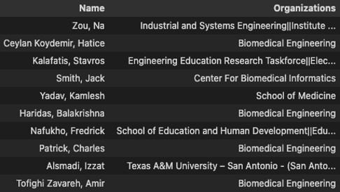
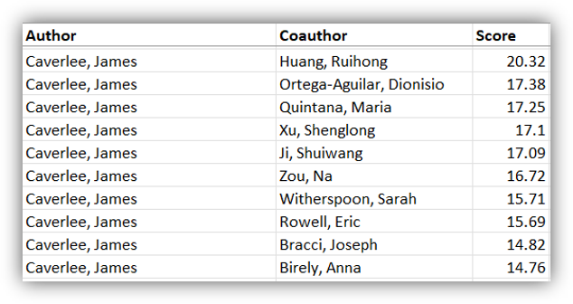

Introduction
We present Scholarly Select, Scholar Recommendation System for students and co-author search for scholars using Information Retrieval & NLP based on the scholar’s research profile. Finding a suitable Scholar for a relevant query by searching each professor on TAMU is a time-consuming task. Scholarly Select entails analyzing a set of Scholars, their background, overview, publication titles and publications to evaluate the most appropriate one or group of relevant scholars. It also can suggest the potential co-authors for scholars to work upon.
The scholar's information is automatically extracted from SCHOLARS@TAMU (scholars.tamu.edu) using the VIVO API. All the relevant details are captured for building a text-based recommendation model. The depth and breadth of research activities undertaken by university scholars i.e., publications, research activities, awards & grants as well as their educational background, are considered when developing the recommendation list of scholars. The recommendation engine is built based on analyzing the scholar features for all the scholars at TAMU. Natural language processing, data mining, information retrieval, and statistical analysis are used together to classify and recommend the appropriate Scholar automatically.
Proposed Solution
Data Extraction:
The scholar's database is accessed through the Vivo API to extract the people's information in JSON format. Academic background, Publications, Patents, Grants/Awards, Teaching, Overview, and other relevant information are extracted based on their previous and current work. Using publication IDs, publication abstracts, titles, citations, and references are extracted over the past 10 years to identify the relations between authors and co-authors
Data PreProcessing:
Text data has noise in forms such as punctuations, numbers, conjunctions, and pronouns, as using counter cosine similarity all the words in the corpus will be considered to calculate the similarity. Regular expressions and NLTK libraries are used to perform tasks like NER, removing stop words, lemmatization, punctuations, and special characters removal. POS tagging is to be done to extract Proper Nouns, Adjectives, and Nouns
Keyword Extraction:
To avoid unrelated terms from the corpus, an auto keyword extraction module is added to the pipeline, and keywords are extracted. Pre-built approaches like Spacy, BERT, Rake, Yake, and NLTK are used to extract the top N keywords based on the size of the phrase/sentence
Data Preparation and Zero-Shot Classification:
Processed and cleaned scholar’s data is created based on user features and preferences. A total of ~5000 scholars at TAMU are used to create the master data. Scholars extracted are classified using a zero-shot classification approach using Bert-large-mini pre-trained model. Zero-shot learning does not require a huge amount of labeled data, their recognition system relies on the availability of labeled data, and knowledge gained of unseen classes is semantically related to seen classes. Participating organizations which include institutes and departments for participating grants are used to identify the multi-disciplinary departments across all the topic areas and departments
Approach
Approach1: Conventional approach using Counter Cosine Similarity with word tokens
Counter cosine similarity with vectorization is used to determine the relevant federal grants for each scholar. Scholar’s overview, publication-related text, academic background, and the grant’s description, organizations, and title are tokenized to get the processed keywords. The similarity calculation is literally the keyword matching across all the one-to-one feature mapping from scholar’s features to grant features. Scholar features - {s1, s2, s3, …} Grant features - {g1, g2, g3, …}. Combined features for count vectorizer cosine similarity - {(s1,g1), (s1, g2), (s1, g3), (s1,.),...(s2,g1), (s2g2), …… , (sn,gm)}. Feature level thresholds are used to identify similar features and a combined similarity score is used to identify the top N proposal grants for each scholar
Approach2: Transformers with a paraphrase-MiniLM- L6-v2 pre-trained model
Tokenizer (AutoTokenizer) and Model (AutoModel) are used to retrieve the sentence-transformer/paraphrase-MiniLM-L6-v2. SBERT adds a pooling operation to the BERT output to derive fixed-sized sentence embeddings. The pre-trained SBERT model is used to extract the phrase embeddings. Using the output of the CLS-token, computing the mean of all output vectors, and computing a max-over-time of the output vectors (MAX-strategy). Mean pooling is used in the transform method to infer a vector for each word and average from each sentence.
Evaluation and Analysis
When evaluating recommended scholars, there are several challenges to consider. Firstly, it can be difficult to determine the appropriate order of the recommended scholars, as we may not fully understand the user's intentions or motivations behind the query. Secondly, there may be some loss of information in the query input by the user, which can further complicate the evaluation process.
To address these challenges, we propose a simple evaluation approach based on relevance scoring. Specifically, we will check if each recommended scholar is relevant to the same department as the query (assuming the query pertains to a single department only). We will then assign a relevance score of 1 if the scholar is relevant, or 0 if they are not.
With the relevance scores calculated, we can then use standard evaluation metrics such as NDCG and Precision@k to assess the quality of the recommendations. This approach provides a straightforward and effective way to evaluate the relevance of recommended scholars, while accounting for the inherent challenges in the recommendation process.
Results & Conclusions
Result for top scholar recommendations for Query: "How can machine learning and artificial intelligence be used to analyze large biomedical datasets and develop personalized treatment plans?"
Result for top co-author recommendations for Prof. James Caverlee
Future Scope of project
Currently limited to Texas A&M University scholars, the product can to be expanded through collaboration with other universities. Allow scholars to identify other researchers for collaboration toward a particular project. A Scholar Recommendation System for students can be effectively and efficiently implemented at TAMU.